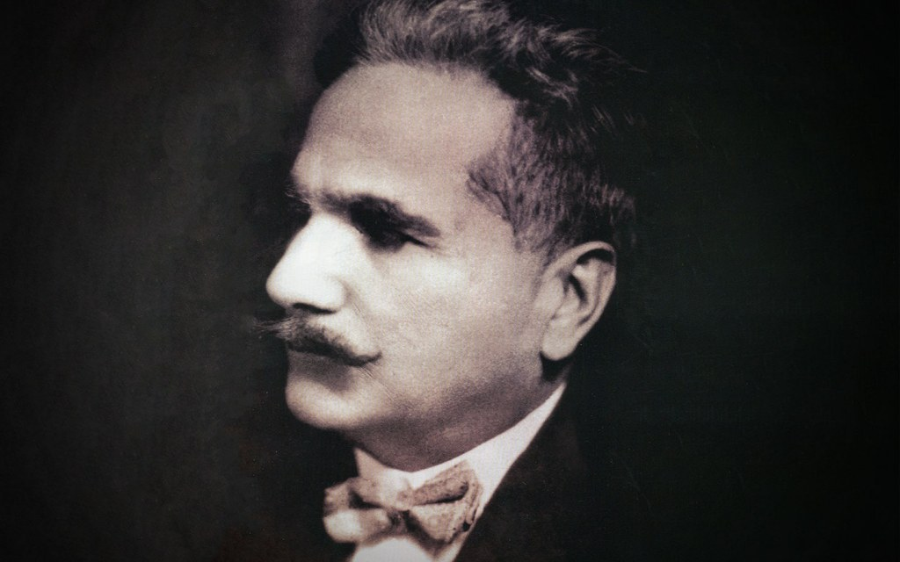

“The Poet of the East”—Dr Allama Iqbal—doesn’t require any introduction. However, since November 9 is a federal holiday and national commemoration of his legacy, let’s learn all about Iqbal Day and its significance in this blog.
While delivering a speech at Aligarh in 1910, Iqbal highlighted the new dynamics of his dreams and hopes. His ideology resonated through the themes of his poetry that went about the vanishing memories of the past glories of Islam, some complaints regarding its present status, and eventually tuning towards a call for unity and reform.
This reform, according to Iqbal, was only achievable by fortifying an individual’s mindset by systematically taking them through three stages – obedience of Islamic law, self-control, and general acceptance of the idea that every Muslim can potentially become a vicegerent of Allah by embodying the Divine
Another important part of Iqbal Day and its significance is to become aware of the intellectual journey that led him to become Hakeem-ul-Ummat (The Sage of the Ummah). Iqbal passed his matriculation exams in 1893 and enrolled at the Government College University (GCU) in 1895. His graduation with the Bachelor of Arts in philosophy, English literature and Arabic won him the Khan Bahadurddin F.S. Jalaluddin medal.
In 1906, pursuing higher education, Iqbal got a Bachelor of Arts degree on scholarship from Trinity College, University of Cambridge. In the same year, he was called to the bar as a barrister at the Lincoln’s Inn.
In 1908, Iqbal got a Doctor of Philosophy degree from the Ludwig Maximilian University of Munich, with his thesis entitled ‘The Development of Metaphysics in Persia’ – which highlighted some mystics of Islam previously unknown in Europe.
During his time in Europe (from 1905 – 1908), Iqbal began to write poetry in Persian – his preferred language as it made expressing his thoughts easier. And from here on forth, he wrote continuously in Persian. Iqbal had a great interest in Islamic studies, especially in the Sufi belief system.
Spirituality is a crucial aspect of Iqbal Day and its significance. Iqbal’s poetry, apart from the ideologies of independence, also explored the concepts of submission to Allah and following the path of the Prophet Muhammad (PBUH). Iqbal began practising law in 1908, at the Chief Court of Lahore but quit and, incidentally, devoted himself to literary works, becoming an active member of the Anjuman-e-Himayat-e-Islam.
Moreover, he was strongly influenced by the poetry and philosophy of Rumi as he was deeply grounded in religion since childhood. Iqbal then began concentrating intensely on Islamic studies, the culture and history of Islamic civilisation and its political future, all the while embracing Rumi as ‘his guide’.